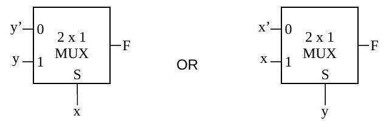
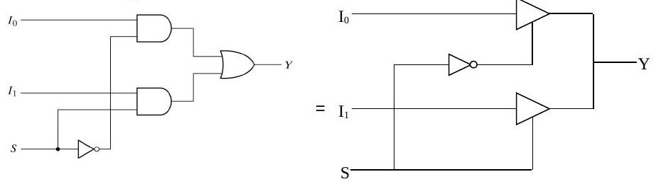
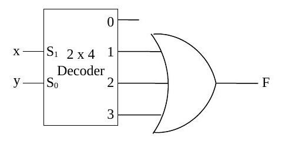

· EEM211
EEM211 Digital Logic Design: November and December 2006 Quiz Solutions (2's Complement Arithmetic, Canonical Forms, MUX, Three-State Gates, Decoder)
EEM211 – Sayısal Mantık Tasarımı · 15.12.2006 · 16.10.2026
This post contains the questions and the instructor-prepared solutions of two quizzes from the fall 2006 semester of the Başkent University EEM211 Digital Logic Design course: "EEM211 Quiz-1" dated 1 November 2006 and "EEM 211 Quiz-2 Solution" dated 15 December 2006. (The Quiz 1, 2, 3 Answer Key posts in the archive are different quizzes from October of the same semester.) The questions and solutions are in English; points are given in parentheses within the solutions. The two original Word files can be downloaded as a ZIP at the end of the post.
Quiz-1 (1 November 2006)
Question 1: Signed 2's complement arithmetic
By using binary numbers of sufficient length, perform the following calculations in signed 2's complement arithmetic. Reconvert your results into decimal to verify that your results are correct. a) (+27) + (−61) (25 pts) b) (−27) + (+61) (25 pts)
a) (27)₁₀ = (0011011)₂ (5 points) and (61)₁₀ = (0111101)₂ (5 points). The 2's complement of 61 is found by converting 1s to 0s and 0s to 1s and adding 1: (1000011)₂ (5 points). The 2's complement of 61 is added to 27:
0011011
+ 1000011
---------
1011110The 2's complement of (1011110)₂ is (0100010)₂ = 34 (5 points). Since the result is signed, it is −34 (= (+27) + (−61)).
b) The 2's complement of 27 is (1100101)₂. It is added to 61:
1100101
+ 0111101
---------
10100010A carry bit appears at the 8th bit (5 points); since the numbers are 7 bits long, this bit is discarded and the result is (0100010)₂ = 34 (= (−27) + (+61)).
Note: The solution calls this bit at the 8th position "overflow"; in fact, it is the end carry discarded in 2's complement addition. Overflow does not occur when adding two numbers of different signs, and the result is correct.
Question 2: Canonical forms
Given F(x, y, z) = x'(y' + z). Find the canonical product-of-sums and canonical sum-of-products expressions for the given function (25 pts). Write your results in ∏ and ∑ standard notations as well. Repeat the same thing for F' (25 pts).
F(x, y, z) = x'(y' + z) = x'y' + x'z = x'y'(z' + z) + x'(y' + y)z = x'y'z' + x'y'z + x'y'z + x'yz = x'y'z' + x'y'z + x'yz (10 points) = Σ(0, 1, 3) (5 points)
| x | y | z | F | F' |
|---|---|---|---|---|
| 0 | 0 | 0 | 1 | 0 |
| 0 | 0 | 1 | 1 | 0 |
| 0 | 1 | 0 | 0 | 1 |
| 0 | 1 | 1 | 1 | 0 |
| 1 | 0 | 0 | 0 | 1 |
| 1 | 0 | 1 | 0 | 1 |
| 1 | 1 | 0 | 0 | 1 |
| 1 | 1 | 1 | 0 | 1 |
According to the explanation in the solution, terms 0, 1 and 3 are the rows of the truth table where F is 1; to solve the question faster, the sum-of-products terms can be taken directly from the truth table. The sum-of-products terms of F' are the complement of those of F; taking the complement of F' gives the product of sums of F:
- F'(x, y, z) = Σ(2, 4, 5, 6, 7) = x'yz' + xy'z' + xy'z + xyz' + xyz (5 points)
- F(x, y, z) = (x + y' + z)(x' + y + z)(x' + y + z')(x' + y' + z)(x' + y' + z') = ∏(2, 4, 5, 6, 7) (5 points)
F' can also be found directly from the complement of F:
F' = (x'(y' + z))' = x + yz' = x(y + y') + (x + x')yz' = xyz + xyz' + xy'z + xy'z' + x'yz' (10 points) = Σ(2, 4, 5, 6, 7) (5 points)
The product of sums of F' is obtained from the complement of the terms not present in F' (that is, the terms of F):
- F'(x, y, z) = (x + y + z)(x + y + z')(x + y' + z') = ∏(0, 1, 3) (5 points)
Quiz-2 (15 December 2006)
Question 1: XNOR with a 2x1 MUX
Realize the logical circuit for Boolean function of F = (x ⊕ y)' by using a 2x1 multiplexer (you may use inverted input).
F = (x ⊕ y)' = (xy' + x'y)' = (x' + y)(x + y') = x'x + x'y' + xy + yy' = xy + x'y'
| x | y | F | |
|---|---|---|---|
| 0 | 0 | 1 | F = y' |
| 0 | 1 | 0 | |
| 1 | 0 | 0 | F = y |
| 1 | 1 | 1 |
If x is chosen as the select input, y' is connected to input 0 of the MUX and y to input 1. If y is chosen as the select input, x' is connected to input 0 and x to input 1.

Question 2: Equivalent circuit using only inverters and three-state gates
Draw the equivalent circuit for the given logic circuit. Use ONLY INVERTER and THREE-STATE gates.
The given circuit is a 2-to-1 multiplexer built with two AND gates and one OR gate (Y = I0·S' + I1·S). The OR gate in the circuit is used to combine the outputs of the AND gates. Since a three-state gate allows outputs to be connected directly together thanks to its high-impedance state, the AND gates can be replaced with three-state gates and the OR gate with a direct connection: the buffer of I0 is enabled by S' and the buffer of I1 is enabled by S.

Question 3: 2x4 decoder and OR gate
Realize the function F(x, y) = xy' + x'y + xy by using a 2x4 decoder and an OR gate ONLY.
When the inputs are applied to a decoder, each output line of the decoder corresponds to one row of the truth table. If the outputs corresponding to the rows where F is 1 are selected and connected to an OR gate, F is obtained at the output.
| Decoder output | x | y | F |
|---|---|---|---|
| 0 | 0 | 0 | 0 |
| 1 | 0 | 1 | 1 |
| 2 | 1 | 0 | 1 |
| 3 | 1 | 1 | 1 |
x is connected to S1 and y to S0; outputs 1, 2 and 3 feed the OR gate. (When the function is simplified, F = x + y.)
